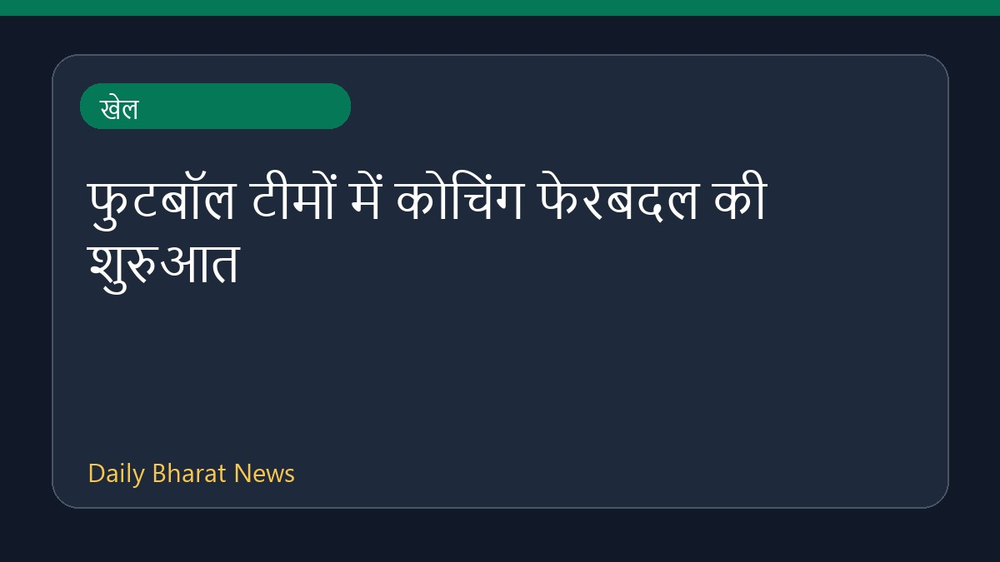

खेल
खेलएक पूर्व क्रिकेटर के अनुसार, भारतीय कप्तान रोहित शर्मा ने चयनकर्ताओं के पाले में गेंद डाल दी है। मीडिया रिपोर्ट्स में यह भी चर्चा है कि चयनकर्ता उन्हें विश्व कप की योजनाओं से बाहर रखना चाहते हैं। इसके अलावा, मुख्य चयनकर्ता अजीत आगरकर की नौकरी पर संकट के बादल मंडराने की खबरें सामने आ रही हैं, और उनकी
Sports News Sources · 05 Aug 2026, 05:00 AM
पूरी खबर पढ़ें → खेल
खेलश्रीलंका दौरे पर जाने वाली भारतीय टेस्ट टीम के अभ्यास के लिए चार स्पिन गेंदबाजों को नेट बॉलर के रूप में शामिल किया गया है। राहुल और जायसवाल ने श्रीलंका रवाना होने से पहले स्पिन गेंदबाजी के खिलाफ नेट सत्र में अभ्यास किया। मीडिया रिपोर्टों के अनुसार, हर्ष दुबे, विपराज निगम, शिवंग और कोटियन इस दौरे पर
Sports News Sources · 05 Aug 2026, 11:34 AM
पूरी खबर पढ़ें → खेल
खेलराष्ट्रमंडल खेलों के समाप्त होने के बाद पाकिस्तान और युगांडा के कई एथलीटों के लापता होने की खबर सामने आई है। मीडिया रिपोर्टों के अनुसार, पाकिस्तानी बॉक्सर कुदरतउल्लाह भी ग्लास्गो में अपने अभियान के बाद गायब हो गए हैं। इस मामले में विभिन्न खेल समाचार स्रोतों द्वारा कई एथलीटों के लापता होने की पुष्टि
Sports News Sources · 05 Aug 2026, 12:39 PM
पूरी खबर पढ़ें → खेल
खेलमिश्र के फुटबॉलर मोहम्मद सालाह के लिवरपूल छोड़कर तुर्किए के क्लब ट्रैबजोन्स्पोर में शामिल होने की संभावना जताई जा रही है। विभिन्न खेल मीडिया रिपोर्ट्स के अनुसार, तुर्की क्लब ट्रैबजोन्स्पोर ने सालाह को इसी सप्ताह अपने साथ जोड़ने के लिए औपचारिक बातचीत शुरू कर दी है। इस संभावित ट्रांसफर को लेकर स्पेन,
Sports News Sources · 05 Aug 2026, 11:11 AM
पूरी खबर पढ़ें → खेल
खेलसेंट लुई रैपिड एंड ब्लिट्ज़ शतरंज प्रतियोगिता के तीसरे दिन भारतीय ग्रैंडमास्टर आर. प्रज्ञानंद ने बढ़त बना ली है। उनके बाद जावोखिर सिंदारोव और वेस्ले सो दूसरे स्थान पर हैं। इस दौरान प्रज्ञानंद ने अपने करियर की सर्वोच्च रैपिड रेटिंग हासिल करते हुए विश्व के शीर्ष 10 खिलाड़ियों में प्रवेश कर लिया है। ती
Sports News Sources · 05 Aug 2026, 01:27 PM
पूरी खबर पढ़ें →
खेलफुटबॉल जगत में प्रबंधकीय नियुक्तियों का दौर शुरू हो गया है। विशेष रूप से अफ्रीकी विश्व कप टीमों में 2026 के टूर्नामेंट के बाद कोचिंग में बड़े बदलाव देखने को मिले हैं। विभिन्न रिपोर्ट्स के अनुसार, अफ्रीकी देशों ने अपने विश्व कप कोचों को हटा दिया है, जिससे महाद्वीप में कोचिंग का परिदृश्य नाटकीय रूप से
Sports News Sources · 05 Aug 2026, 07:00 AM
पूरी खबर पढ़ें → देश
देश